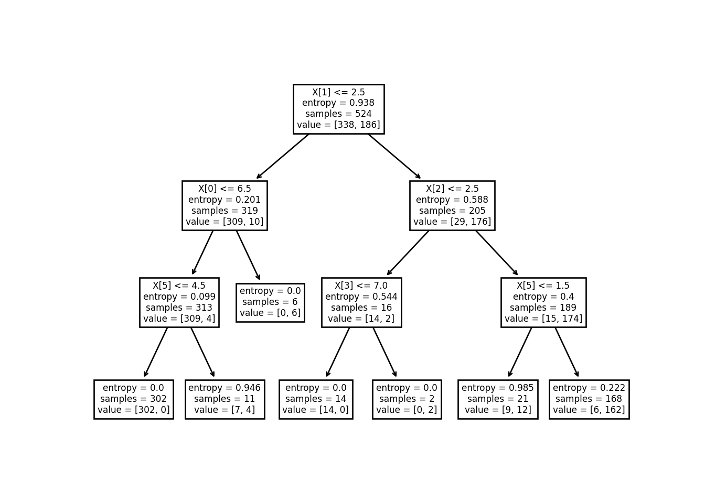
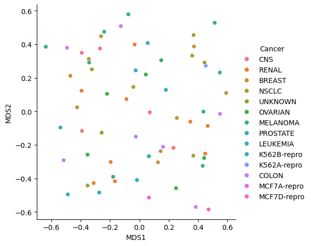
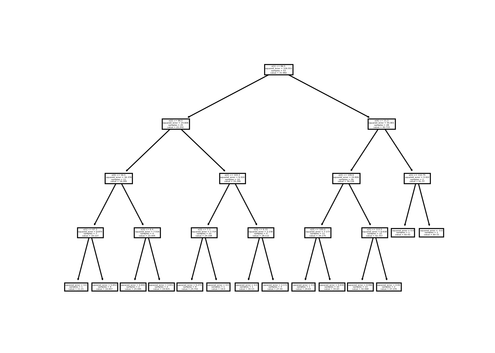
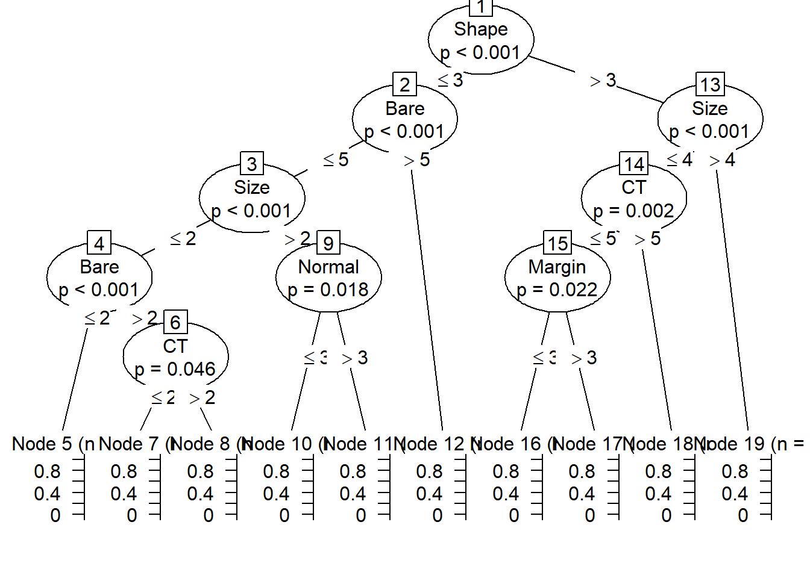
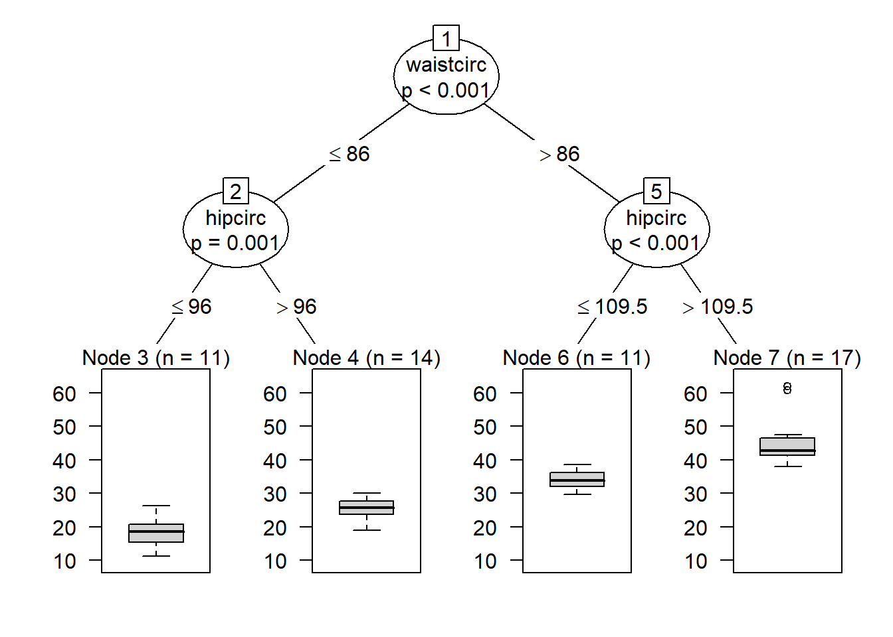
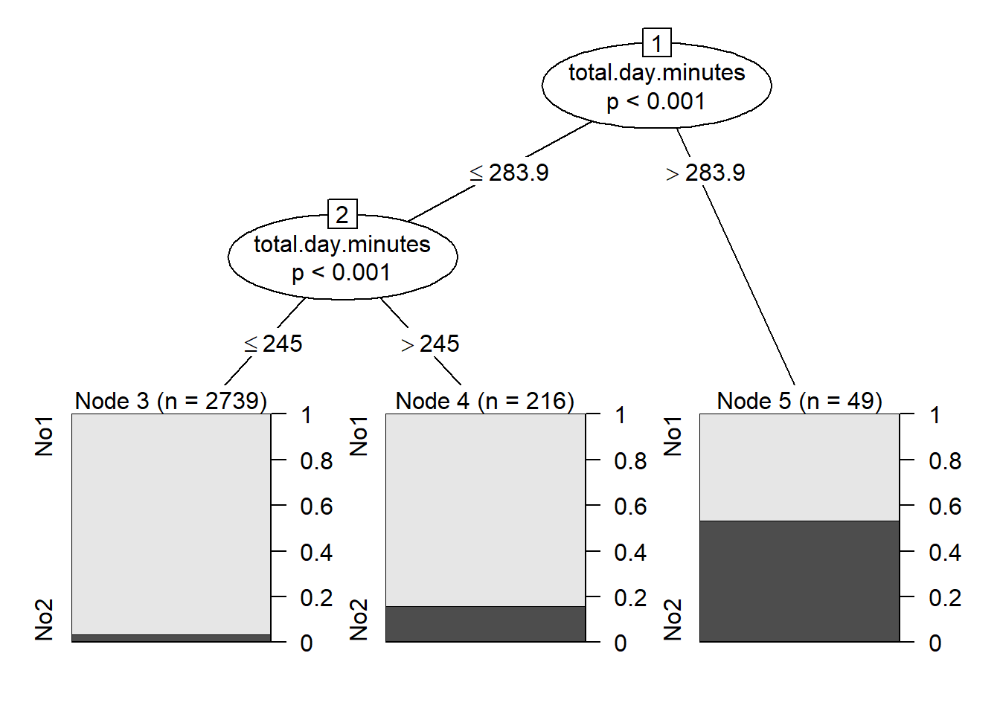
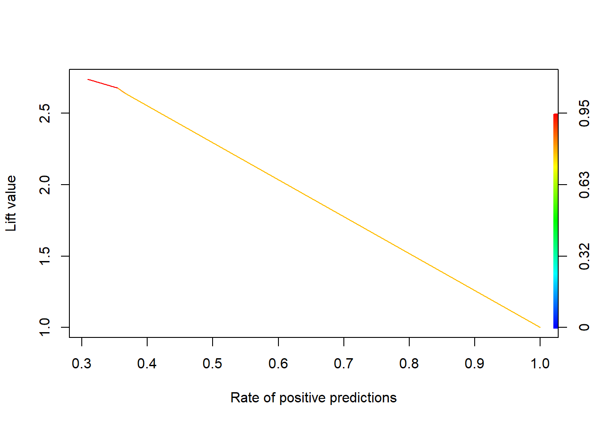
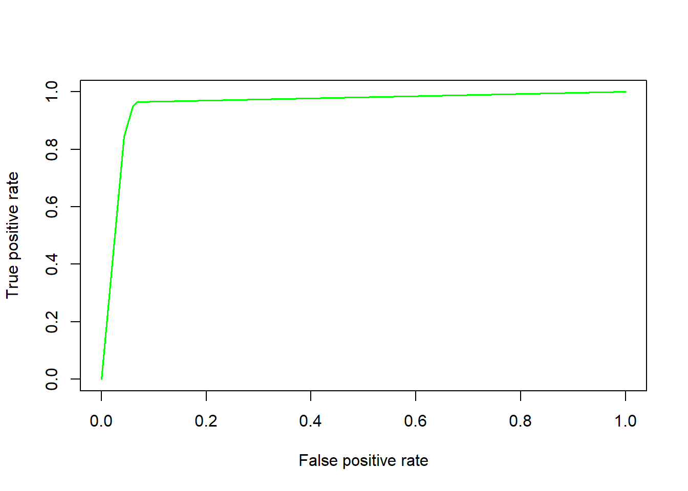

Chapter 3 Decision Trees
We will now discuss decision tree. Two of the most popular algorithms in R is rpart and partykit. We will fist focus on classification trees (response variable is categorical). The data in the code below uses the breast cancer data set from the UCI repository.
3.1 Classification Trees
###Classification
### Get training and test data
set.seed(7515)
perm=sample(1:699)
BC_randomOrder=BCdata[perm,]
train = BC_randomOrder[1:floor(0.75*699),]
test = BC_randomOrder[(floor(0.75*699)+1):699,]
BC.tree = rpart(Target ~ . - ID, data=train, method='class',
parms = list(split='gini')) ## or 'information'
summary(BC.tree)## Call:
## rpart(formula = Target ~ . - ID, data = train, method = "class",
## parms = list(split = "gini"))
## n= 524
##
## CP nsplit rel error xerror xstd
## 1 0.79781421 0 1.00000000 1.0000000 0.05963291
## 2 0.07650273 1 0.20218579 0.2622951 0.03608339
## 3 0.01639344 2 0.12568306 0.1693989 0.02951125
## 4 0.01000000 4 0.09289617 0.1639344 0.02906079
##
## Variable importance
## Size Shape Normal Chromatin Epithelial Margin CT
## 22 18 16 15 14 13 2
## Bare
## 1
##
## Node number 1: 524 observations, complexity param=0.7978142
## predicted class=0 expected loss=0.3492366 P(node) =1
## class counts: 341 183
## probabilities: 0.651 0.349
## left son=2 (360 obs) right son=3 (164 obs)
## Primary splits:
## Size < 3.5 to the left, improve=169.5227, (0 missing)
## Shape < 3.5 to the left, improve=164.4060, (0 missing)
## Bare < 2.5 to the left, improve=152.7409, (10 missing)
## Epithelial < 2.5 to the left, improve=148.5429, (0 missing)
## Normal < 2.5 to the left, improve=146.2118, (0 missing)
## Surrogate splits:
## Shape < 3.5 to the left, agree=0.933, adj=0.787, (0 split)
## Epithelial < 3.5 to the left, agree=0.889, adj=0.646, (0 split)
## Chromatin < 3.5 to the left, agree=0.889, adj=0.646, (0 split)
## Normal < 2.5 to the left, agree=0.874, adj=0.598, (0 split)
## Margin < 3.5 to the left, agree=0.868, adj=0.579, (0 split)
##
## Node number 2: 360 observations, complexity param=0.07650273
## predicted class=0 expected loss=0.07777778 P(node) =0.6870229
## class counts: 332 28
## probabilities: 0.922 0.078
## left son=4 (334 obs) right son=5 (26 obs)
## Primary splits:
## Normal < 3.5 to the left, improve=26.79691, (0 missing)
## Bare < 6 to the left, improve=24.86222, (7 missing)
## CT < 6.5 to the left, improve=23.10046, (0 missing)
## Shape < 3.5 to the left, improve=16.21263, (0 missing)
## Chromatin < 3.5 to the left, improve=15.47227, (0 missing)
## Surrogate splits:
## Shape < 4.5 to the left, agree=0.944, adj=0.231, (0 split)
## CT < 6.5 to the left, agree=0.942, adj=0.192, (0 split)
## Chromatin < 3.5 to the left, agree=0.942, adj=0.192, (0 split)
## Margin < 3.5 to the left, agree=0.939, adj=0.154, (0 split)
## Epithelial < 4.5 to the left, agree=0.936, adj=0.115, (0 split)
##
## Node number 3: 164 observations
## predicted class=1 expected loss=0.05487805 P(node) =0.3129771
## class counts: 9 155
## probabilities: 0.055 0.945
##
## Node number 4: 334 observations, complexity param=0.01639344
## predicted class=0 expected loss=0.0239521 P(node) =0.6374046
## class counts: 326 8
## probabilities: 0.976 0.024
## left son=8 (308 obs) right son=9 (26 obs)
## Primary splits:
## Bare < 2.5 to the left, improve=4.531640, (7 missing)
## Epithelial < 2.5 to the left, improve=2.685889, (0 missing)
## Shape < 2.5 to the left, improve=2.202471, (0 missing)
## CT < 5.5 to the left, improve=1.850413, (0 missing)
## Size < 1.5 to the left, improve=1.583809, (0 missing)
## Surrogate splits:
## CT < 6.5 to the left, agree=0.927, adj=0.077, (7 split)
## Margin < 7.5 to the left, agree=0.927, adj=0.077, (0 split)
## Epithelial < 5.5 to the left, agree=0.927, adj=0.077, (0 split)
##
## Node number 5: 26 observations
## predicted class=1 expected loss=0.2307692 P(node) =0.04961832
## class counts: 6 20
## probabilities: 0.231 0.769
##
## Node number 8: 308 observations
## predicted class=0 expected loss=0 P(node) =0.5877863
## class counts: 308 0
## probabilities: 1.000 0.000
##
## Node number 9: 26 observations, complexity param=0.01639344
## predicted class=0 expected loss=0.3076923 P(node) =0.04961832
## class counts: 18 8
## probabilities: 0.692 0.308
## left son=18 (16 obs) right son=19 (10 obs)
## Primary splits:
## CT < 3.5 to the left, improve=7.876923, (0 missing)
## Size < 1.5 to the left, improve=7.438034, (0 missing)
## Shape < 2.5 to the left, improve=7.438034, (0 missing)
## Chromatin < 1.5 to the left, improve=4.923077, (0 missing)
## Epithelial < 2.5 to the left, improve=4.119347, (0 missing)
## Surrogate splits:
## Size < 1.5 to the left, agree=0.923, adj=0.8, (0 split)
## Shape < 1.5 to the left, agree=0.923, adj=0.8, (0 split)
## Epithelial < 2.5 to the left, agree=0.808, adj=0.5, (0 split)
## Chromatin < 1.5 to the left, agree=0.808, adj=0.5, (0 split)
## Margin < 2.5 to the left, agree=0.769, adj=0.4, (0 split)
##
## Node number 18: 16 observations
## predicted class=0 expected loss=0 P(node) =0.03053435
## class counts: 16 0
## probabilities: 1.000 0.000
##
## Node number 19: 10 observations
## predicted class=1 expected loss=0.2 P(node) =0.01908397
## class counts: 2 8
## probabilities: 0.200 0.800## n= 524
##
## node), split, n, loss, yval, (yprob)
## * denotes terminal node
##
## 1) root 524 183 0 (0.65076336 0.34923664)
## 2) Size< 3.5 360 28 0 (0.92222222 0.07777778)
## 4) Normal< 3.5 334 8 0 (0.97604790 0.02395210)
## 8) Bare< 2.5 308 0 0 (1.00000000 0.00000000) *
## 9) Bare>=2.5 26 8 0 (0.69230769 0.30769231)
## 18) CT< 3.5 16 0 0 (1.00000000 0.00000000) *
## 19) CT>=3.5 10 2 1 (0.20000000 0.80000000) *
## 5) Normal>=3.5 26 6 1 (0.23076923 0.76923077) *
## 3) Size>=3.5 164 9 1 (0.05487805 0.94512195) *## Size Shape Normal Chromatin Epithelial Margin CT
## 175.82429 145.82955 128.09709 118.66130 116.94858 105.82111 13.37876
## Bare
## 4.53164varimp.data=data.frame(BC.tree$variable.importance)
varimp.data$names=as.character(rownames(varimp.data))
ggplot(data=varimp.data,aes(x=names,y=BC.tree.variable.importance))+geom_bar(stat="identity")+coord_flip()+labs(x="Variable Name",y="Variable Importance")
tscores = predict(BC.tree,type='class')
scores = predict(BC.tree, test, type='class')
##Training misclassification rate:
sum(tscores!=train$Target)/nrow(train)## [1] 0.03244275## [1] 0.05714286
3.1.1 Python Classification Trees
Note that Python is NOT able to handle categorical variables in its basic tree classifier. This means that if you do have categorical variables, you will need to one-hot encode these variables before using the tree classifier. For this data set, all variables are recorded as integer, so this is an exercise we do not need to worry about (but please do keep this in mind!!).
import numpy as np
import pandas as pd
from sklearn import tree
from sklearn.model_selection import train_test_split
from sklearn.metrics import confusion_matrix
bcdata_py=r.BCdata
X=bcdata_py.iloc[:,1:10]
y=bcdata_py['Target']
X_train, X_test,y_train, y_test = train_test_split(X,y ,
random_state=49865,
test_size=0.25,
shuffle=True)
## Now fit the tree
class_tree = tree.DecisionTreeClassifier(criterion='entropy', max_depth=3)
class_tree = class_tree.fit(X_train,y_train)
y_pred = class_tree.predict(X_test)
conf = confusion_matrix(y_test, y_pred)
print('Confusion matrix\n\n', conf)## Confusion matrix
##
## [[110 10]
## [ 3 52]]
class_tree2 = tree.DecisionTreeClassifier(criterion='gini', max_depth=3)
class_tree2 = class_tree2.fit(X_train,y_train)
y_pred = class_tree2.predict(X_test)
conf = confusion_matrix(y_test, y_pred)
print('Confusion matrix\n\n', conf)## Confusion matrix
##
## [[110 10]
## [ 4 51]]
3.2 Regression Trees
The code below illustrates regression trees on a version of the bodyfat data set.
###Regression
set.seed(13172) # Set Seed so that same sample can be reproduced in future also
# Now Selecting 75% of data as sample from total 'n' rows of the data
sample <- sample.int(n = nrow(bodyfat), size = floor(.75*nrow(bodyfat)), replace = F)
train <- bodyfat[sample, ]
test <- bodyfat[-sample, ]
body_model<-rpart(DEXfat ~ age + waistcirc + hipcirc +
elbowbreadth + kneebreadth, data = train,
control = rpart.control(minsplit = 10))
summary(body_model)
## Call:
## rpart(formula = DEXfat ~ age + waistcirc + hipcirc + elbowbreadth +
## kneebreadth, data = train, control = rpart.control(minsplit = 10))
## n= 53
##
## CP nsplit rel error xerror xstd
## 1 0.67492210 0 1.00000000 1.0387549 0.19298200
## 2 0.12397892 1 0.32507790 0.3674702 0.09713363
## 3 0.06337174 2 0.20109898 0.3207674 0.07055438
## 4 0.04539485 3 0.13772723 0.3298414 0.07030078
## 5 0.01311181 4 0.09233238 0.2635804 0.07215928
## 6 0.01000000 5 0.07922057 0.2502471 0.06967234
##
## Variable importance
## waistcirc hipcirc kneebreadth elbowbreadth age
## 30 25 25 11 9
##
## Node number 1: 53 observations, complexity param=0.6749221
## mean=31.98226, MSE=126.5508
## left son=2 (25 obs) right son=3 (28 obs)
## Primary splits:
## waistcirc < 86.5 to the left, improve=0.6749221, (0 missing)
## hipcirc < 109.25 to the left, improve=0.6400649, (0 missing)
## kneebreadth < 9.35 to the left, improve=0.4913650, (0 missing)
## age < 37 to the left, improve=0.1897384, (0 missing)
## elbowbreadth < 6.55 to the left, improve=0.1514361, (0 missing)
## Surrogate splits:
## hipcirc < 107.85 to the left, agree=0.887, adj=0.76, (0 split)
## kneebreadth < 9.35 to the left, agree=0.849, adj=0.68, (0 split)
## elbowbreadth < 6.55 to the left, agree=0.679, adj=0.32, (0 split)
## age < 37 to the left, agree=0.660, adj=0.28, (0 split)
##
## Node number 2: 25 observations, complexity param=0.04539485
## mean=22.2016, MSE=24.60555
## left son=4 (11 obs) right son=5 (14 obs)
## Primary splits:
## hipcirc < 96.5 to the left, improve=0.49496490, (0 missing)
## waistcirc < 75.15 to the left, improve=0.43069200, (0 missing)
## age < 31.5 to the left, improve=0.33752490, (0 missing)
## kneebreadth < 8.55 to the left, improve=0.24410760, (0 missing)
## elbowbreadth < 6.65 to the left, improve=0.08933998, (0 missing)
## Surrogate splits:
## waistcirc < 72 to the left, agree=0.76, adj=0.455, (0 split)
## kneebreadth < 8.25 to the left, agree=0.76, adj=0.455, (0 split)
## age < 31.5 to the left, agree=0.72, adj=0.364, (0 split)
## elbowbreadth < 6.45 to the left, agree=0.64, adj=0.182, (0 split)
##
## Node number 3: 28 observations, complexity param=0.1239789
## mean=40.715, MSE=55.90078
## left son=6 (25 obs) right son=7 (3 obs)
## Primary splits:
## kneebreadth < 11.15 to the left, improve=0.53126700, (0 missing)
## hipcirc < 109.9 to the left, improve=0.49501800, (0 missing)
## waistcirc < 106 to the left, improve=0.48547170, (0 missing)
## elbowbreadth < 6.35 to the left, improve=0.18322950, (0 missing)
## age < 64 to the left, improve=0.06033762, (0 missing)
##
## Node number 4: 11 observations, complexity param=0.01311181
## mean=18.26455, MSE=16.37561
## left son=8 (7 obs) right son=9 (4 obs)
## Primary splits:
## age < 56.5 to the left, improve=0.48821750, (0 missing)
## waistcirc < 77.5 to the left, improve=0.37437570, (0 missing)
## hipcirc < 94.1 to the left, improve=0.26063300, (0 missing)
## kneebreadth < 8.55 to the left, improve=0.02392090, (0 missing)
## elbowbreadth < 6.15 to the left, improve=0.02295546, (0 missing)
## Surrogate splits:
## waistcirc < 77.5 to the left, agree=0.818, adj=0.50, (0 split)
## elbowbreadth < 6.55 to the left, agree=0.818, adj=0.50, (0 split)
## hipcirc < 91.5 to the right, agree=0.727, adj=0.25, (0 split)
##
## Node number 5: 14 observations
## mean=25.295, MSE=9.323925
##
## Node number 6: 25 observations, complexity param=0.06337174
## mean=38.8272, MSE=23.49564
## left son=12 (11 obs) right son=13 (14 obs)
## Primary splits:
## hipcirc < 109.9 to the left, improve=0.72361790, (0 missing)
## waistcirc < 98.75 to the left, improve=0.46229770, (0 missing)
## elbowbreadth < 6.35 to the left, improve=0.24168590, (0 missing)
## kneebreadth < 9.9 to the left, improve=0.22697980, (0 missing)
## age < 60.5 to the left, improve=0.03275597, (0 missing)
## Surrogate splits:
## waistcirc < 98.75 to the left, agree=0.84, adj=0.636, (0 split)
## elbowbreadth < 6.45 to the left, agree=0.76, adj=0.455, (0 split)
## kneebreadth < 8.75 to the left, agree=0.68, adj=0.273, (0 split)
## age < 49.5 to the right, agree=0.60, adj=0.091, (0 split)
##
## Node number 7: 3 observations
## mean=56.44667, MSE=48.76009
##
## Node number 8: 7 observations
## mean=16.12714, MSE=8.875049
##
## Node number 9: 4 observations
## mean=22.005, MSE=7.515725
##
## Node number 12: 11 observations
## mean=34.17545, MSE=7.173207
##
## Node number 13: 14 observations
## mean=42.48214, MSE=5.959931 printcp(body_model)
##
## Regression tree:
## rpart(formula = DEXfat ~ age + waistcirc + hipcirc + elbowbreadth +
## kneebreadth, data = train, control = rpart.control(minsplit = 10))
##
## Variables actually used in tree construction:
## [1] age hipcirc kneebreadth waistcirc
##
## Root node error: 6707.2/53 = 126.55
##
## n= 53
##
## CP nsplit rel error xerror xstd
## 1 0.674922 0 1.000000 1.03875 0.192982
## 2 0.123979 1 0.325078 0.36747 0.097134
## 3 0.063372 2 0.201099 0.32077 0.070554
## 4 0.045395 3 0.137727 0.32984 0.070301
## 5 0.013112 4 0.092332 0.26358 0.072159
## 6 0.010000 5 0.079221 0.25025 0.069672
body_model2<-prune(body_model,cp=0.05175731)
printcp(body_model2)
##
## Regression tree:
## rpart(formula = DEXfat ~ age + waistcirc + hipcirc + elbowbreadth +
## kneebreadth, data = train, control = rpart.control(minsplit = 10))
##
## Variables actually used in tree construction:
## [1] hipcirc kneebreadth waistcirc
##
## Root node error: 6707.2/53 = 126.55
##
## n= 53
##
## CP nsplit rel error xerror xstd
## 1 0.674922 0 1.00000 1.03875 0.192982
## 2 0.123979 1 0.32508 0.36747 0.097134
## 3 0.063372 2 0.20110 0.32077 0.070554
## 4 0.051757 3 0.13773 0.32984 0.070301
varimp.data=data.frame(body_model2$variable.importance)
varimp.data$names=as.character(rownames(varimp.data))
ggplot(data=varimp.data,aes(x=names,y=body_model2.variable.importance))+geom_bar(stat="identity")+coord_flip()+labs(x="Variable Name",y="Variable Importance")
tscores = predict(body_model2,type='vector')
scores = predict(body_model2, test, type='vector')
##Training measures:
mean(abs(tscores-train$DEXfat))
## [1] 3.338013
rsq.rpart(body_model2)
##
## Regression tree:
## rpart(formula = DEXfat ~ age + waistcirc + hipcirc + elbowbreadth +
## kneebreadth, data = train, control = rpart.control(minsplit = 10))
##
## Variables actually used in tree construction:
## [1] hipcirc kneebreadth waistcirc
##
## Root node error: 6707.2/53 = 126.55
##
## n= 53
##
## CP nsplit rel error xerror xstd
## 1 0.674922 0 1.00000 1.03875 0.192982
## 2 0.123979 1 0.32508 0.36747 0.097134
## 3 0.063372 2 0.20110 0.32077 0.070554
## 4 0.051757 3 0.13773 0.32984 0.070301


3.2.1 Regression trees in Python
We can also do regression trees in Python:
from sklearn.model_selection import cross_val_score
from sklearn.tree import DecisionTreeRegressor
train_py = r.train
test_py = r.test
X_train = train_py[['age', 'waistcirc', 'hipcirc', 'elbowbreadth', 'kneebreadth']]
X_test = test_py[['age', 'waistcirc', 'hipcirc',
'elbowbreadth', 'kneebreadth']]
y_train = train_py['DEXfat']
y_test = test_py['DEXfat']
regressor = DecisionTreeRegressor(random_state=12356,max_depth=4)
reg_tree=regressor.fit(X_train,y_train)
importance = regressor.feature_importances_
for i,v in enumerate(importance):
print('Feature: %0d, Score: %.5f' % (i,v))## Feature: 0, Score: 0.01353
## Feature: 1, Score: 0.70797
## Feature: 2, Score: 0.12906
## Feature: 3, Score: 0.00809
## Feature: 4, Score: 0.14136## MAE is 3.7088580246913585
3.3 Recursive partitioning with partykit
### Classification example:
set.seed(7515)
perm=sample(1:699)
BC_randomOrder=BCdata[perm,]
train = BC_randomOrder[1:floor(0.75*699),]
model1=ctree(Target ~ . - ID, data=train)
model1##
## Model formula:
## Target ~ CT + Size + Shape + Margin + Epithelial + Bare + Chromatin +
## Normal + Mitoses
##
## Fitted party:
## [1] root
## | [2] Shape <= 3
## | | [3] Bare <= 5
## | | | [4] Size <= 2
## | | | | [5] Bare <= 2: 0.000 (n = 289, err = 0.0)
## | | | | [6] Bare > 2
## | | | | | [7] CT <= 2: 0.000 (n = 9, err = 0.0)
## | | | | | [8] CT > 2: 0.200 (n = 10, err = 1.6)
## | | | [9] Size > 2
## | | | | [10] Normal <= 3: 0.062 (n = 16, err = 0.9)
## | | | | [11] Normal > 3: 0.714 (n = 7, err = 1.4)
## | | [12] Bare > 5: 0.889 (n = 18, err = 1.8)
## | [13] Shape > 3
## | | [14] Size <= 4
## | | | [15] CT <= 5
## | | | | [16] Margin <= 3: 0.083 (n = 12, err = 0.9)
## | | | | [17] Margin > 3: 0.778 (n = 9, err = 1.6)
## | | | [18] CT > 5: 0.963 (n = 27, err = 1.0)
## | | [19] Size > 4: 0.984 (n = 127, err = 2.0)
##
## Number of inner nodes: 9
## Number of terminal nodes: 10
###Regression example:
set.seed(13172)
sample <- sample.int(n = nrow(bodyfat), size = floor(.75*nrow(bodyfat)), replace = F)
train <- bodyfat[sample, ]
model1<-ctree(DEXfat ~ age + waistcirc + hipcirc + elbowbreadth +
kneebreadth, data = train)
model1##
## Model formula:
## DEXfat ~ age + waistcirc + hipcirc + elbowbreadth + kneebreadth
##
## Fitted party:
## [1] root
## | [2] waistcirc <= 86
## | | [3] hipcirc <= 96: 18.265 (n = 11, err = 180.1)
## | | [4] hipcirc > 96: 25.295 (n = 14, err = 130.5)
## | [5] waistcirc > 86
## | | [6] hipcirc <= 109.5: 34.175 (n = 11, err = 78.9)
## | | [7] hipcirc > 109.5: 44.946 (n = 17, err = 711.5)
##
## Number of inner nodes: 3
## Number of terminal nodes: 4
### Example for binning data:
churn=read.csv("Q:\\My Drive\\Data Mining\\Data\\tele_churn.csv")
churn$y<-ifelse(churn$churn=="TRUE",1,0)
churn$y<-ordered(churn$y,levels=c(0,1),labels="No","Yes")
model1<-ctree(y~total.day.minutes,data=churn)
model1##
## Model formula:
## y ~ total.day.minutes
##
## Fitted party:
## [1] root
## | [2] total.day.minutes <= 283.9
## | | [3] total.day.minutes <= 245: No1 (n = 2739, err = 3.4%)
## | | [4] total.day.minutes > 245: No1 (n = 216, err = 15.7%)
## | [5] total.day.minutes > 283.9: No2 (n = 49, err = 46.9%)
##
## Number of inner nodes: 2
## Number of terminal nodes: 3
Some interesting extra tidbits!! This shows how to do ROC curves and lift curves for classification trees.
test = BC_randomOrder[(floor(0.75*699)+1):699,]
###Lift (from classification trees)
scores1=predict(BC.tree,test,type="prob")
pred_val <-prediction(scores1[,2],test$Target)
plot(performance(pred_val, measure="lift", x.measure="rpp"), colorize=TRUE)
# Calculating True Positive and False Positive Rate
perf_val <- performance(pred_val, "tpr", "fpr")
#Plot the ROC curve
plot(perf_val, col = "green", lwd = 1.5)
#Calculating KS statistics
ks1.tree <- max(attr(perf_val, "y.values")[[1]] - (attr(perf_val, "x.values")[[1]]))
ks1.tree## [1] 0.89714123.4 Model Reliance
Model reliance is a model agnostic value for variable importance. It is the ratio of the expected loss of a model when “noise” is incorporated into a model versus the expect loss of the model. For incorporating “noise” into the model, we will use Dr. Breiman’s permutation of a variable in the model. To explore the importance of variable 1, we will permutet the values of variable 1 and compare its expected loss to the expect loss when this variable is not permuted. We will do this for all variables in the data set. We will go back to the original decision tree:
set.seed(7515)
perm=sample(1:699)
BC_randomOrder=BCdata[perm,]
train = BC_randomOrder[1:floor(0.75*699),]
test = BC_randomOrder[(floor(0.75*699)+1):699,]
BC.tree = rpart(Target ~ . - ID, data=train, method='class',
parms = list(split='gini')) ## or 'information'
VI <- vector(length=ncol(train)-2)
loss.model=mean(abs(train$Target-as.numeric(as.character(predict(BC.tree,type="class")))))
temp1=train
for (j in 2:10)
{temp1=train
temp1[,j]=sample(train[,j])
loss.noise = mean(abs(train$Target-as.numeric(as.character(predict(BC.tree, newdata=temp1,type="class")))))
VI[(j-1)] = loss.noise/loss.model
}
VI<-data.frame(VI)
rownames(VI)<-colnames(train[2:10])
VI## VI
## CT 1.764706
## Size 6.588235
## Shape 1.000000
## Margin 1.000000
## Epithelial 1.000000
## Bare 3.352941
## Chromatin 1.000000
## Normal 6.117647
## Mitoses 1.000000Please NOTE that Size is the most important, followed by Normal, then Bare, and finally CT. This is the exact order of the decision tree (which makes sense why these are the most important and the order of importance). Since model reliance is a model agnostic procedure, you can use this on other models as well. Good introduction to some of the other measures you will see in Machine Learning.